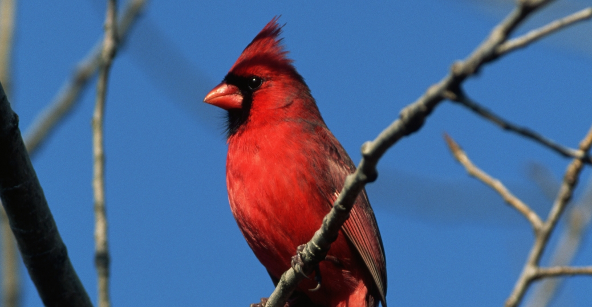
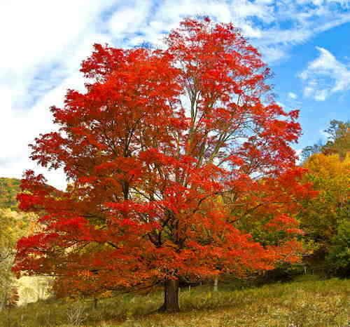

When the state of Virginia voted to secede from the United States during the Civil War (1861-65), the people of the rugged and mountainous western region of the state opposed the decision and organized to form their own state, West Virginia, in support of the Union. Congress granted statehood to West Virginia on June 20, 1863. The West Virginia town of Harpers Ferry was the site of John Brown’s ill-fated 1859 raid on the federal armory there. Although Brown’s plan to arm a large-scale revolt of enslaved people with weapons from the armory ultimately failed. Brown was hanged, the raid did succeed in inflaming white Southern fears of rebellions and increased the mounting tension between North and South prior to the Civil War. Today, West Virginia is a major coal-producing state, supplying 15 percent of the nation’s coal. The New River Gorge Bridge near Fayetteville is the longest steel arch bridge in the world. Every October, the town hosts a Bridge Day celebration when the road is closed to traffic and individuals are allowed to parachute and bungee jump off the bridge; the event attracts close to 100,000 participants and spectators each year. Famous West Virginia natives include actor Don Knotts, gymnast Mary Lou Retton and test pilot Chuck Yeager.
| Date of Statehood | Capital | Population | Size |
|---|---|---|---|
| June 20, 1863 | Charleston | 1.79 million | 24,230 square miles |
Montani Semper Liberi (“Mountaineers Are Always Free”)
Rhododendron
Cardinal
Sugar Maple
Interesting facts